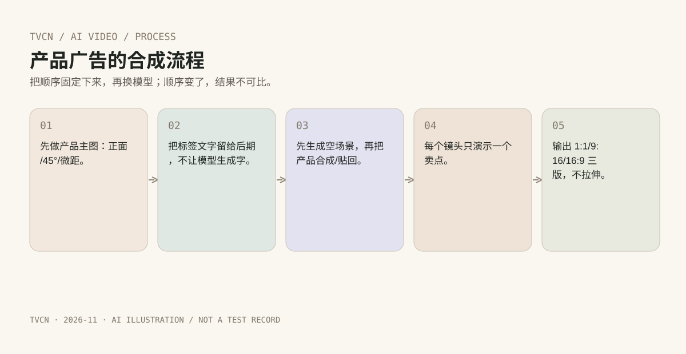
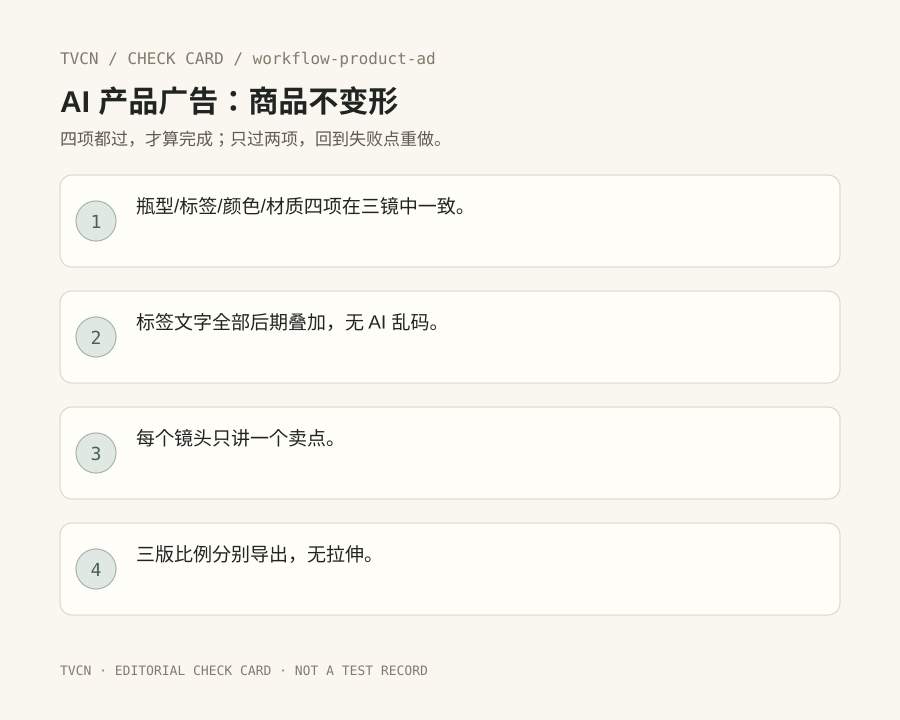
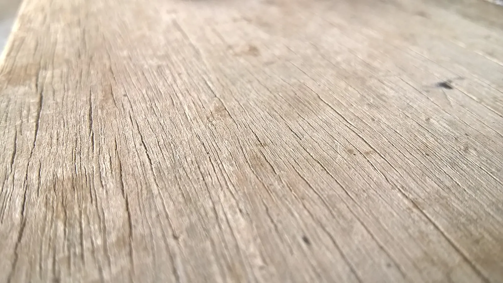
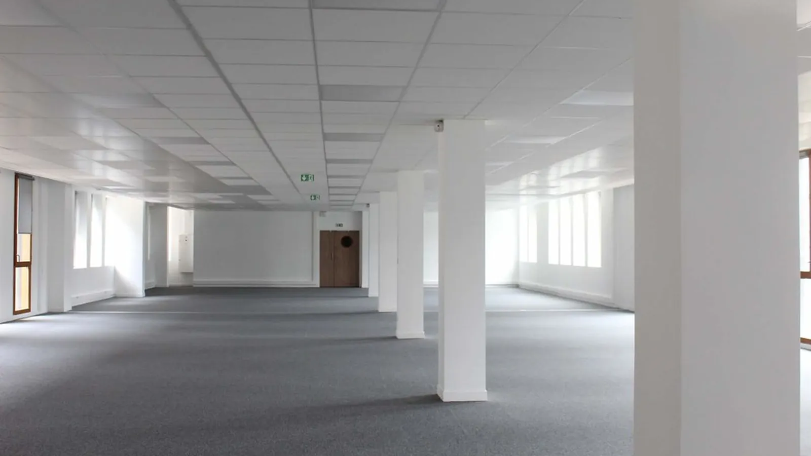
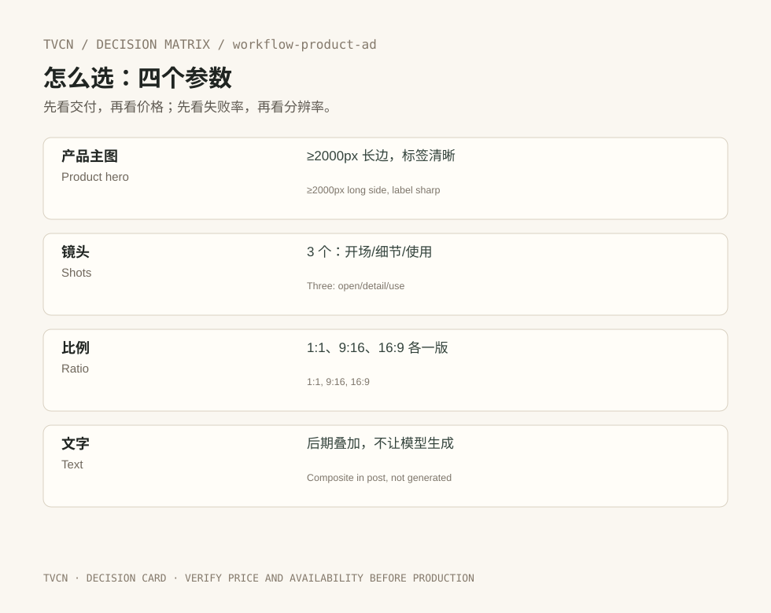

适用与不适用 / Fit and no-fit
- 电商主图视频、详情页、投放素材。
Ecommerce hero videos, detail pages and ad assets. - 产品有明确瓶型/标签/品牌色，不能变形。
Products with a fixed shape, label and brand color. - 不适用：纯概念产品、无实物参考。
Not for: concept products with no physical reference.
怎么做 / Do this
- 先做产品主图：正面/45°/微距。
Make product heroes: front/45°/macro. - 把标签文字留给后期，不让模型生成字。
Leave label text to post; do not generate type. - 先生成空场景，再把产品合成/贴回。
Generate the empty set, then composite the product back. - 每个镜头只演示一个卖点。
One selling point per shot. - 输出 1:1/9:16/16:9 三版，不拉伸。
Deliver 1:1/9:16/16:9 without stretching.
参数与判断 / Parameters
| 项目 / Item | 本页口径 / This page |
|---|---|
| 产品主图 Product hero | ≥2000px 长边，标签清晰 ≥2000px long side, label sharp |
| 镜头 Shots | 3 个：开场/细节/使用 Three: open/detail/use |
| 比例 Ratio | 1:1、9:16、16:9 各一版 1:1, 9:16, 16:9 |
| 文字 Text | 后期叠加，不让模型生成 Composite in post, not generated |
DIAGRAM / PROCESS
产品广告的合成流程

别踩 / Avoid
- 让模型生成标签文字；十个字错三个。
Generating label type; three of ten characters wrong. - 产品跟着镜头变形；瓶型/logo 漂移。
Product warps with camera; bottle/logo drift. - 一个镜头塞三个卖点；观众一个没记住。
Three selling points in one shot; none remembered.
继续往下 / Go deeper
产品广告的 AI 风险不是“不好看”，是“商品不对”。瓶型差 5%、标签错一个字、品牌色偏 10%，都会让客户拒收。最稳的流程是产品实拍/渲染做底，AI 只生成场景和光，最后合成。
如果一定要生成产品，把标签留空，后期贴；把瓶型用参考图锁死；每个镜头只转 30–45 度，不让模型猜背面。生成越少，变形越少。
验收 / Checks
- 瓶型/标签/颜色/材质四项在三镜中一致。
Shape/label/color/material consistent across three shots. - 标签文字全部后期叠加，无 AI 乱码。
All label text composited, no AI garble. - 每个镜头只讲一个卖点。
One selling point per shot. - 三版比例分别导出，无拉伸。
Three ratios exported separately without stretching.
VISUAL BOARD / 图版04




图片说明：本页封面、图解与步骤图是编辑示意或结构图，不是本页实测照片，也不能当作器材测试证据；AI 辅助生成的图会在图注标出。判断器材或画面，以正文的测试条件与现场记录为准。